Le vêtement de l'homme
لباس الرجل
Formes, matières et noms de l'habit masculin marocain — les lignes du Mashreq, du Golfe, de l'Empire ottoman et de la Perse — et le système vestimentaire propre à Dar al-Hiraf.
Pour ce que porte, concrètement, un résident au fil de sa journée, voir le dress code du Riad.
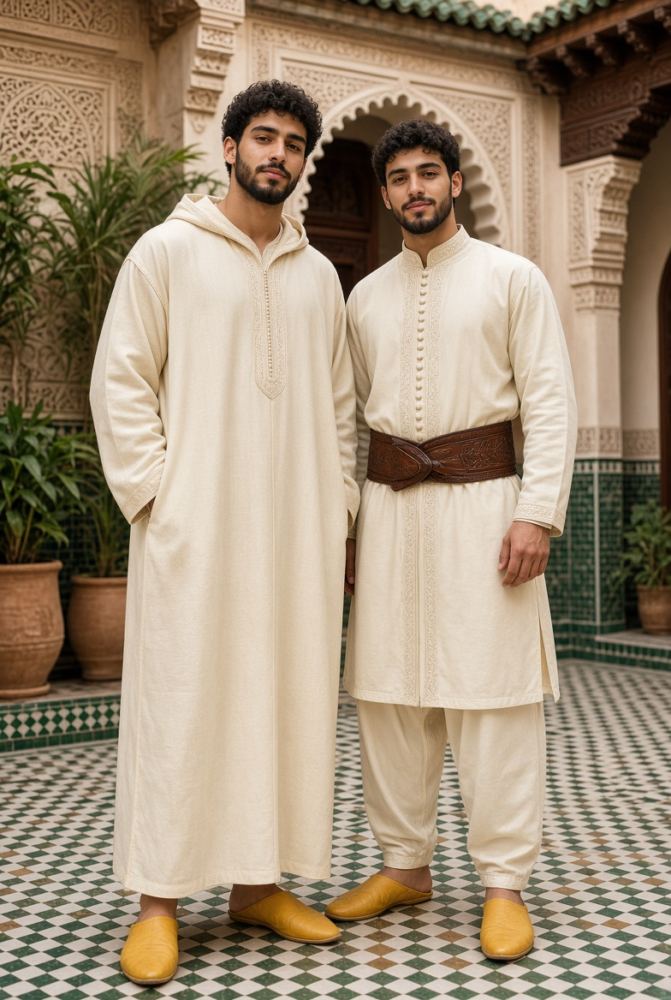
DANS LA MAISON
Une manière de porter, pas un uniforme
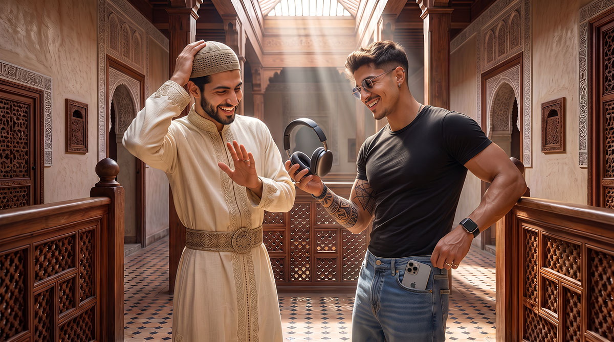
Dans la vie quotidienne du Riad, le vêtement traditionnel est la norme, non l'exception — une manière de porter, pas un uniforme.
MAGHREB
Le vestiaire marocain
المغرب
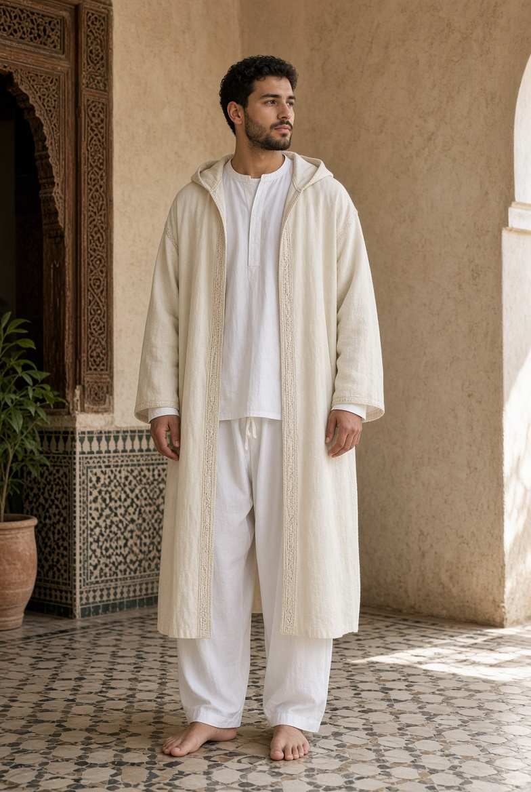
جلابة
Djellaba
ǧallāba · jellaba
Longue robe ample à capuche pointue (قب, qob). Pièce quotidienne et de sortie : coton ou lin l'été, laine l'hiver. La capuche protège du soleil et du froid. Colonne vertébrale du vestiaire masculin maghrébin.
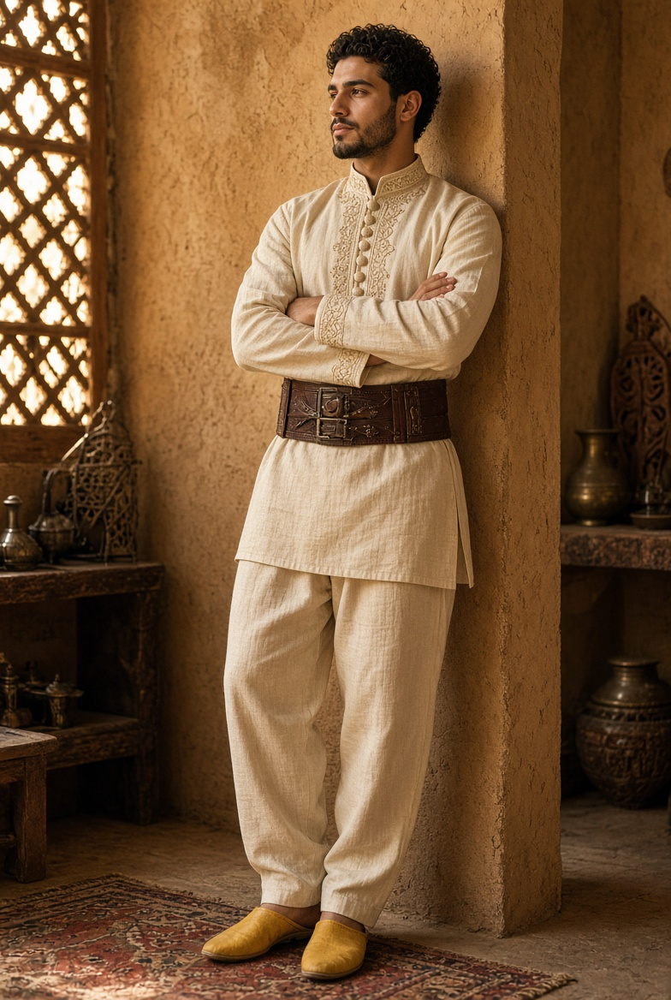
جبادور
Jabador
ǧabādūr · jabador
Ensemble de cérémonie : tunique droite fermée par une rangée de boutons sphériques tressés à la main (عقد, ʿaqad / aakad), assortie au serwal (سروال, sirwāl). Ceinture mdama (مضمة, maḍamma). Mariages, fêtes, grandes occasions.
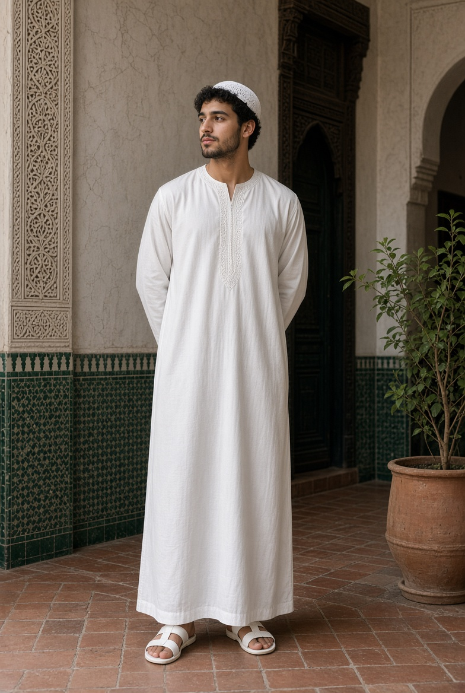
قميص
Qamis
qamīṣ · kamis
Tunique droite, légère, sans capuche, jusqu'aux chevilles. Coton ou satin blanc. Souvent porté avec la taqiyah. Variante d'intérieur : la gandoura (غندورة, ġandūra).
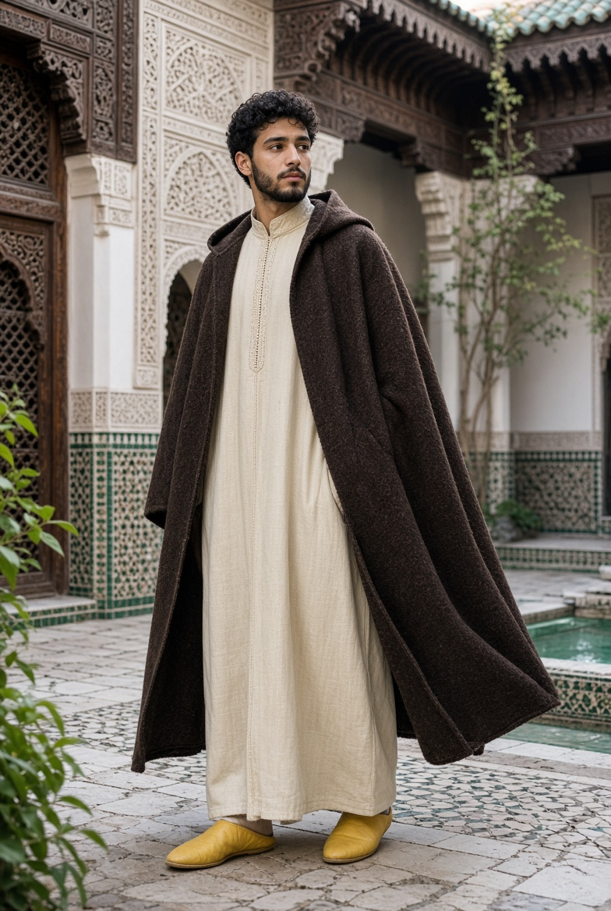
سلهام
Selham
silhām · selham
Large manteau de laine, ouvert, sans manches, à capuche. On le porte par-dessus la djellaba par temps froid ou à cheval. Signe de dignité et de protection.
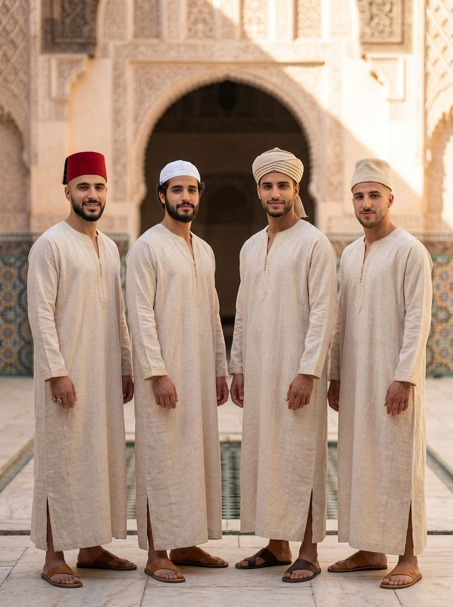
طربوش · طاقية · عمامة · شاشية
Les coiffes marocaines
ṭarbūš · ṭāqiyya / taguia · ʿimāma / rezza · chechia
Tarbouche (Fez) — coiffe cylindrique de feutre rouge, souvent à pompon de soie noire. Héritage urbain ottoman et maghrébin.
Taqiyah (Taguia) — petit calot rond, bien ajusté au crâne. La pièce la plus simple et la plus courante, portée pour la prière comme dans la vie quotidienne. Au Maroc, taguia.
Turbante (ʿimāma / rezza) — pièce de tissu enroulée autour de la tête ou de la taqiyah. Variante plus solennelle, encore présente dans les milieux traditionnels.
Chechia — forme voisine de la taqiyah, plus souple, parfois en laine ou feutre. Usage quotidien et de prière.
AUX ATELIERS
Tenue de travail
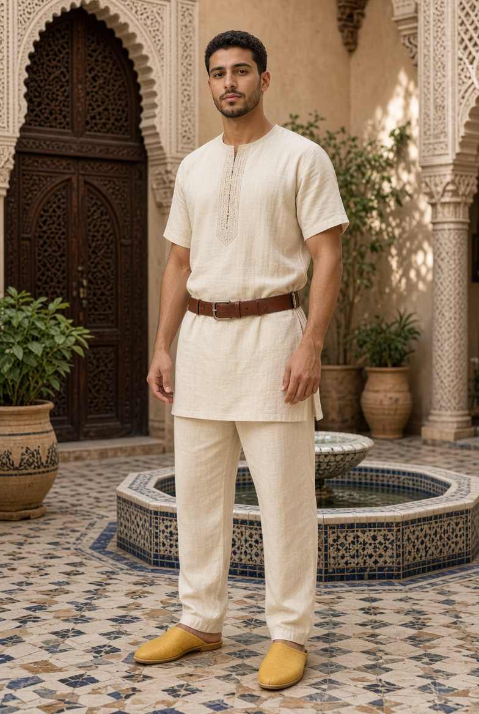
Tunique à manches courtes, tissu résistant, ceinture de cuir, belgha — le vêtement qui accompagne le geste du métier. Pas de représentation : la main libre, le corps à l'aise.
Coton ou lin léger, coupe droite. La même logique que le qamis, adaptée au travail de l'atelier.
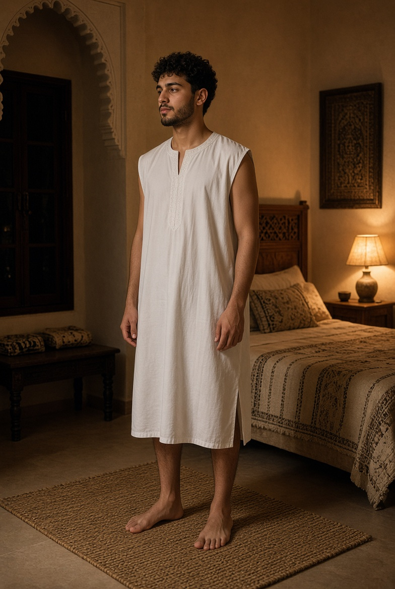
تحت اللباس · الليل
Sous le vêtement · La nuit
Maison et nuit — Pas de pyjama codifié. Gandoura ou qamis de coton fin.
Couches sous la tunique — Izar ou caleçon → serwal → qamis / gandoura → djellaba ou jabador.
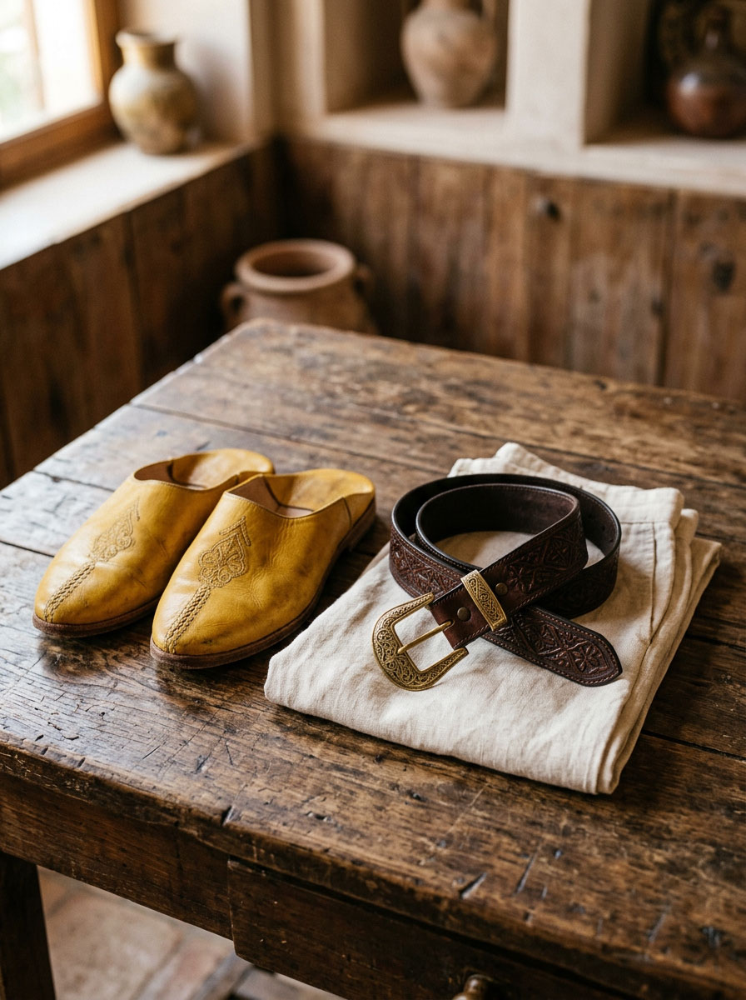
ACCESSOIRES
Belgha · Serwal · Mdama
Belgha — babouche de cuir. Serwal — pantalon large. Mdama — ceinture.
COMPARAISON
Au-delà du Maghreb
ما وراء المغرب
Golfe · Mashreq · Monde ottoman · Perse
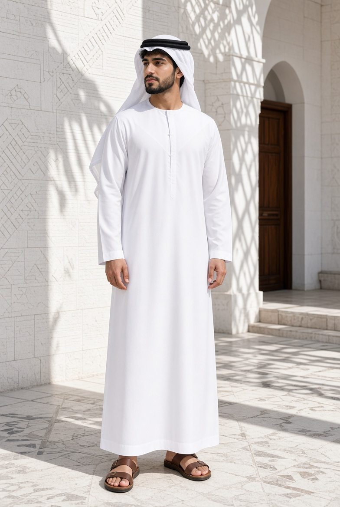
Thobe · Dishdasha · Kandura
ثوب · دشداشة · كندورة
Tunique longue quotidienne. Ghutra fixée par l'ʿiqāl.
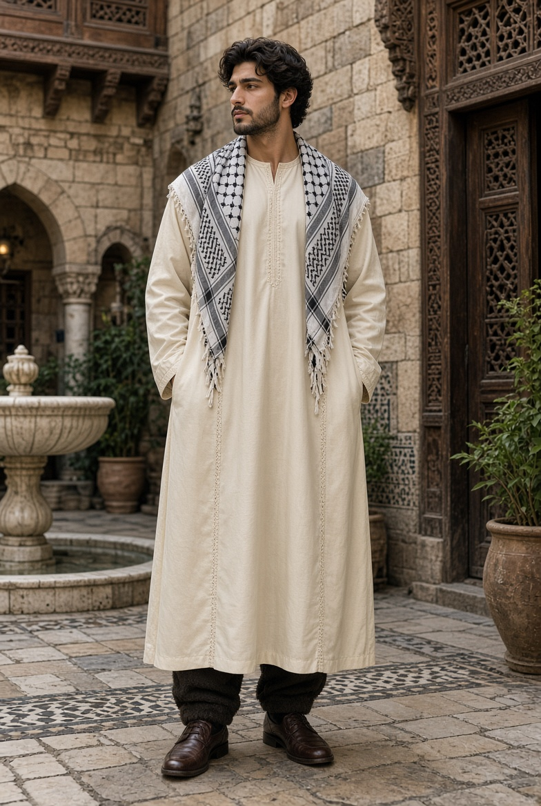
Thobe · Keffiyeh
ثوب · كوفية
Tunique longue avec keffiyeh (kūfiyya) drapée sur les épaules — variante du Mashreq et du Levant.
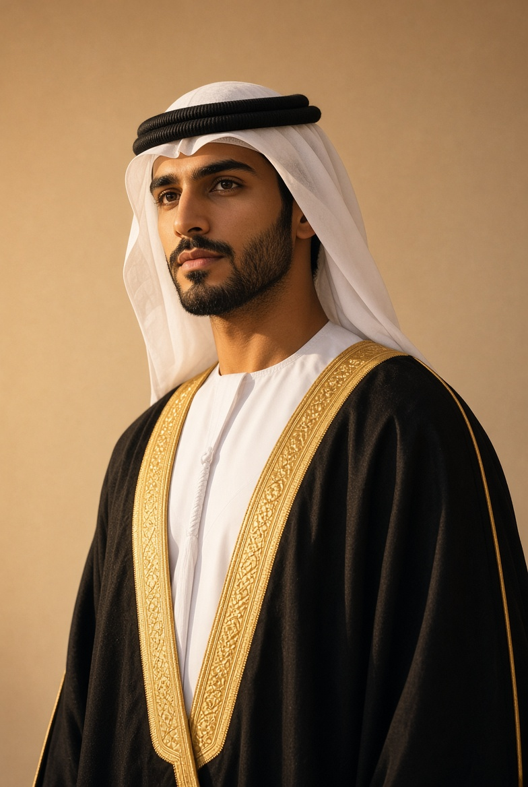
Bisht
بشت
Manteau cérémonial, souvent bordé d'or.
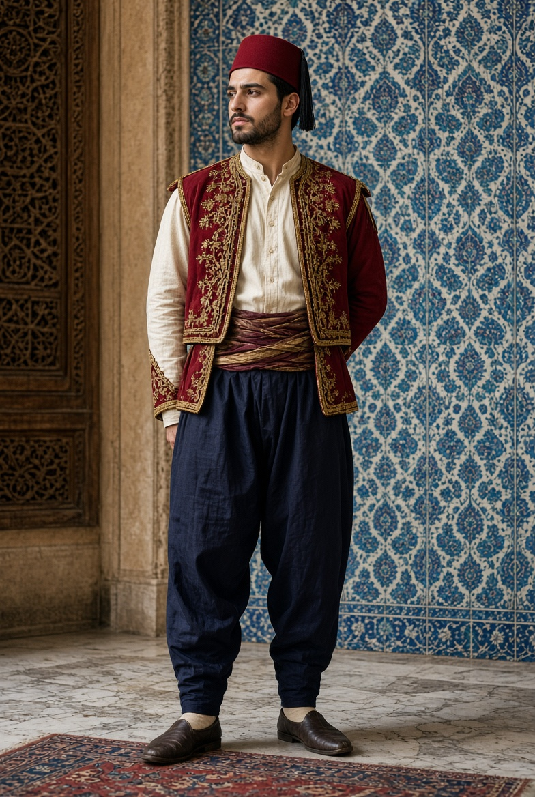
Salvar · Cepken · Fes
Salvar, cepken, kuşak, fes. Pas de djellaba à qob.
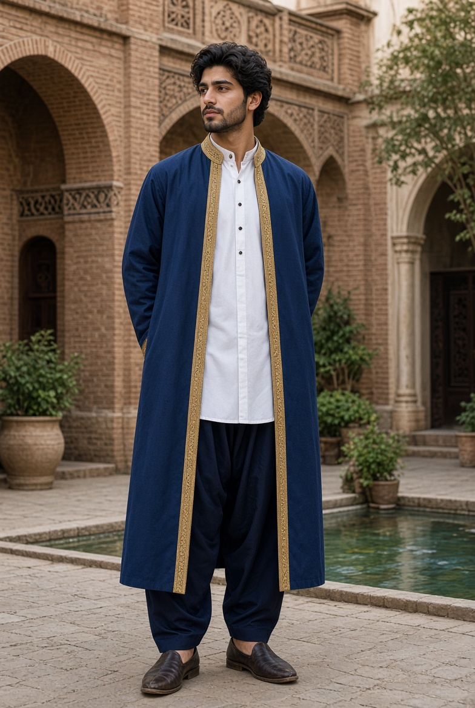
Qaba · Pirahan · Shalvar
قبا · پیرهن · شلوار
Le qabā est le manteau long, souvent ouvert devant.
DAR AL-HIRAF
Al-Kiswa al-Khassa
الكسوة الخاصة بدار الحِرَف
Le système propre à Dar al-Hiraf
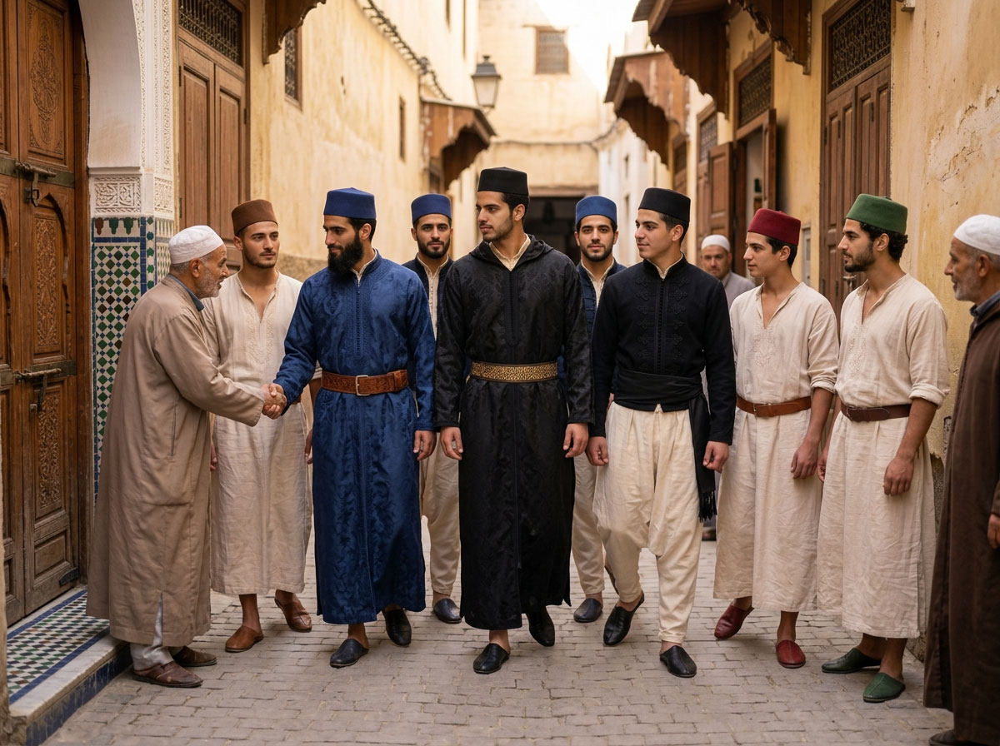
Au-delà du vestiaire marocain et arabe décrit plus haut, les élèves de Dar al-Hiraf portent un système de signes propre à la maison — gandora, calotte de métier, ceinture de grade, khirqa, et les autres pièces du système.
Les termes de cette page sont réunis dans le glossaire de la maison.